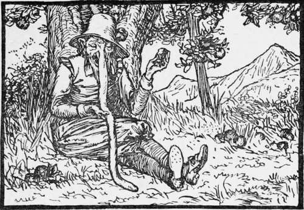
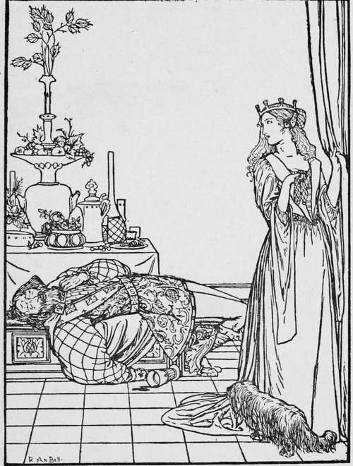

The Nose-Tree
Description
This section is from the book "Household Tales by Brothers Grimm", by Brothers Grimm. Also available from Amazon: Household Tales by Brothers Grimm.
The Nose-Tree
Did you ever hear the story of the three poor soldiers, who, after having fought hard in the wars, set out on their road home, begging their way as they went ?
They had journeyed on a long way, sick at heart with their bad luck at thus being turned loose on the world in their old days; when one evening they reached a deep gloomy wood, through which lay their road. Night came fast upon them, and they found that they must, however unwillingly, sleep in this wood; so, to make all as safe as they could, it was agreed that two should lie down and sleep, while a third sat up and watched, lest wild beasts should break in and tear them to pieces. When he was tired he was to wake one of the others, and sleep in his turn; and so on with the third, so as to share the work fairly among them.
The two who were to rest first soon lay down and fell fast asleep ; and the other made himself a good fire under the trees, and sat down by its side to keep watch. He had not sat long before, all on a sudden, up came a little dwarf in a red jacket. "Who is there?" said he. "A friend," said the soldier. "What sort of a friend?" " An old broken soldier," said the other, " with his two comrades, who have nothing left to live on; come, sit down and warm yourself." "Well, my worthy fellow," said the little man, "I will do what I can for you; take this and show it to your comrades in the morning." So he took out an old cloak and gave it to the soldier; telling him, that whenever he put it over his shoulders anything that he wished for would be done for him. Then the little man made him a bow and walked away.
The second soldier's turn to watch soon came, and the first laid him down to sleep; but the second man had not sat by himself long before up came the dwarf in the red jacket again. The soldier treated him in as friendly a way as his comrade had done, and the little man gave him a purse, which he told him would be always full of gold, let him draw as much as he would out of it.
Then the third soldier's turn to watch came; and he also had little Red-jacket for his guest, who gave him a wonderful horn, that drew crowds around it whenever it was played, and made every one forget his business to come and dance to its beautiful music.
In the morning each told his story, and showed the gift he had got from the elf: and as they all liked each other very much, and were old friends, they agreed to travel together to see the world, and, for a while, only to make use of the wonderful purse. And thus they spent their time very joyously; till at last they began to be tired of this roving life, and thought they should like to have a home of their own. So the first soldier put his old cloak on, and wished for a fine castle. In a moment it stood before their eyes: fine gardens and green lawns spread round it, and flocks of sheep, and goats, and herds of oxen were grazing about; and out of the gate came a grand coach with three dapple-grey horses, to meet them and bring them home.
All this was very well for a time, but they found it would not do to stay at home always; so they got together all their rich clothes, and jewels, and money, and ordered their coach with three dapple-grey horses, and set out on a journey to see a neighbouring king. Now this king had an only daughter, and as he saw the three soldiers travelling in such grand style, he took them for kings' sons, and so gave them a kind welcome. One day, as the second soldier was walking with the princess, she saw that he had the wonderful purse in his hand. Then she asked him what it was, and he was foolish enough to tell her,—though, indeed, it did not much signify what he said, for she was a fairy, and knew all the wonderful things that the three soldiers brought. Now this princess was very cunning and artful; so she set to work and made a purse, so like the soldier's that no one would know one from the other; and then she asked him to come and see her, and made him drink some wine that she had got ready for him, and which soon made him fall fast asleep. Then she felt in his pocket, and took away the wonderful purse, and left the one she had made in its place.
The next morning the soldiers set out home; and soon after they reached their castle, happening to want some money, they went to their purse for it, and found something indeed in it; but to their great sorrow, when they had emptied it, none came in the place of what they took. Then the cheat was soon found out; for the second soldier knew where he had been, and how he had told the story to the princess, and he guessed that she had played him a trick. "Alas!" cried he, "poor wretches that we are, what shall we do ?" " Oh ! " said the first soldier, "let no grey hairs grow for this mishap: I will soon get the purse back." So he threw his cloak across his shoulders, and wished himself in the princess's chamber.
There he found her sitting alone, telling up her gold, that fell around her in a shower from the wonderful purse.
But the soldier stood looking at her too long; for she turned round, and the moment she saw him she started up and cried out with all her force, "Thieves! thieves! " so that the whole court came running in, and tried to seize on him. The poor soldier now began to be dreadfully frightened in his turn, and thought it was high time to make the best of his way off; so, without thinking of the ready way of travelling that his cloak gave him, he ran to the window, opened it, and jumped out; and unluckily, in his haste, his cloak caught and was left hanging, to the great joy of the princess, who knew its worth.
The poor soldier made the best of his way home to his comrades on foot, and in a very downcast mood; but the third soldier told him to keep up his heart, and took his horn and blew a merry tune. At the first blast a countless troop of foot and horse come rushing to their aid, and they set out to make war against their enemy. Then the king's palace was besieged, and he was told that he must give up the purse and cloak, or that not one stone should be left upon another. And the king went into his daughter's chamber and talked with her; but she said, " Let me try first if I cannot beat them some way or another." So she thought of a cunning scheme to overreach them; and dressing herself out as a poor girl, with a basket on her arm, she set out by night with her maid, and went into the enemy's camp, as if she wanted to sell trinkets.
The Princess and the Soldier.
Continue to:
Tags
fairy tales, children's stories, brothers grimm, household tales